Chapter 6: Articles¶
a, an, the — three small words, a big difference
Hindi has nothing called an article. "Main doctor hoon" — and that's it, the job is done. So when we speak English, the mind repeats the same habit: "I am doctor." In a grammar book this looks like a small mistake, but a listener notices it immediately. The good news: choosing an article is just the answer to three questions, and those three questions will be clear to you for good in this chapter.
- 1The decision flowchart
- 2a or an — look at the sound , not the letter
- 3When "the" is used — seven sure occasions
- 4Zero article — where nothing is used
- 5One noun, three forms — feel the difference
- 6The mistakes we really make
In one line
An article is a small word before a noun that tells the listener whether you mean any one of something (a / an) or that particular one (the). An article says "any one" or "that special one".
- I need a pen. = I need one pen — any pen will do, it doesn't matter which.
- I need the pen. = I need that pen — the special one that we both know about.
- I need pens. = I need pens (in general) — no article is used here.
6.1 The decision flowchart¶
Every time a noun comes up, ask these three questions — in order. The answer will come by itself. At the start it will feel slow; in two weeks it will start to happen automatically.

6.2 a or an — look at the sound , not the letter¶
The biggest mistake here is the thought that "an goes before a word that starts with a vowel". The rule is about the sound, not the letter. Say the word aloud — if the first sound from your mouth is a vowel, use an.
| Word | First sound | Correct | Why |
|---|---|---|---|
| hour | aa- | an hour | the "h" is silent — the sound starts with a vowel |
| honest | o- | an honest man | the "h" is silent |
| university | yu- | a university | "yu" is a consonant sound |
| useful | yu- | a useful book | the same "yu" sound |
| one-rupee coin | wa- | a one-rupee coin | "one" = "wan", a consonant sound |
| MBA | em- | an MBA degree | M is said "em" — a vowel sound |
| LIC agent | el- | an LIC agent | L = "el" |
| European | yu- | a European country | a "yu" sound |
A sure test for abbreviations
With abbreviations (MBA, SP, FIR, NGO, RTI), say the name of each letter. The letters whose names start with a vowel sound — A, E, F, H, I, L, M, N, O, R, S, X — take an before them. The rest take a.
an FIR · an NGO · an RTI · a BJP leader · a CA · a PhD
6.3 When "the" is used — seven sure occasions¶
| Occasion | Example |
|---|---|
| Second mention (first time it is "a") | I saw a dog. The dog was limping. |
| Only one in the world | the sun · the moon · the sky · the earth |
| Superlatives and ordinals | the best player · the first bus |
| Rivers, seas, mountain ranges, deserts | the Ganga · the Arabian Sea · the Himalayas · the Thar |
| Musical instruments | She plays the flute. |
| Newspapers, names of books, buildings | the Hindu · the Gita · the Taj Mahal |
| Countries with a plural or "of" in the name | the Netherlands · the United States · the Republic of India |
The first occasion is the most important, so listen to it once:
- Yesterday I met a teacher. The teacher told me about this book. First time, "a teacher" — the listener doesn't know which one. Second time, "the teacher" — now they know.
6.4 Zero article — where nothing is used¶
You need to remember this list, because this is where Indian English pushes in "the" where it isn't needed.
| Category | Correct | Wrong |
|---|---|---|
| General plural | Dogs are loyal. | The dogs are loyal. |
| Uncountable (general) | Milk is good for health. | The milk is good for health. |
| Names of people and places | Ravi lives in Jaipur. | The Ravi lives in the Jaipur. |
| Languages | She speaks Marathi. | She speaks the Marathi. |
| Sports | He plays cricket. | He plays the cricket. |
| Meals | We had lunch at two. | We had the lunch at two. |
| Transport — by + vehicle | I came by bus. | I came by the bus. |
| Places, when you go for their purpose | go to school · go to bed · go to court | go to the school (for studying) |
| Years, months, days | in 2026 · on Monday · in June | in the 2026 |
'go to school' vs 'go to the school' — both correct, different meaning
go to school = go to study (for its purpose) — My son goes to school.
go to the school = go to that building — I went to the school to meet the principal. The same difference works with hospital, college, church, prison and court.
6.5 One noun, three forms — feel the difference¶
| Sentence | Meaning |
|---|---|
| A tiger is dangerous. | Any one tiger — taken as an example. |
| The tiger is dangerous. | That particular tiger we are talking about. |
| Tigers are dangerous. | Tigers (the whole species) are dangerous. This is the most natural. |
A small test
When you are confused, ask yourself: "Which one?"
If there is an answer ("the one I brought yesterday") → the.
If the answer is "any one" → a / an.
If the question makes no sense ("Which milk?" — milk in general) → nothing.
6.6 The mistakes we really make¶
Top article mistakes
- Wrong: I am engineer.
- Right: I am an engineer.
-
Why: When you say what your job is, English needs an article — a doctor, an engineer, a teacher. In Hindi "main engineer hoon" is enough, but not in English.
-
Wrong: He is going to the office by the bus.
- Right: He is going to the office by bus.
-
Why: "by + vehicle" takes no article — by bus, by train, by car, by auto, on foot.
-
Wrong: She plays the cricket very well.
- Right: She plays cricket very well.
-
Why: Sports take no article. But musical instruments do: she plays the guitar.
-
Wrong: The honesty is the best policy.
- Right: Honesty is the best policy.
-
Why: Uncountable nouns for feelings (honesty, love, patience, anger) come without an article when they are general. But "the best" needs "the" — it is a superlative.
-
Wrong: I have a good news for you.
- Right: I have good news for you.
-
Why: "news" is uncountable — "a" doesn't go before it. To say one item of news: a piece of good news.
-
Wrong: She went to the home early.
- Right: She went home early.
-
Why: "home" takes neither an article nor "to" — go home, reach home, stay home.
-
Wrong: My father is a best cook in our family.
- Right: My father is the best cook in our family.
-
Why: Before a superlative (best, tallest, first) it is always "the" — because there can be only one.
-
Wrong: He gave me a advice.
- Right: He gave me some advice.
- Why: advice, information, furniture, luggage, equipment, work — these are all uncountable. Not "a" — "some" or "a piece of" will do.
Three things that are enough
1. When you say your job, use an article — I am a teacher.
2. First time "a / an", second time "the".
3. General plural and general uncountable → nothing.
6.7 Practice — Articles¶
Exercise 1
My brother is ___ MBA student.
- a
- an
- the
- no article
Hint: Say M aloud — what sound comes out?
Answer
an
The sound of M is 'em' — it starts with a vowel. So 'an MBA'. The letter M is a consonant, but the sound is a vowel, and the rule is about sound.
Exercise 2
She studies at ___ university in Pune.
- a
- an
- the
- no article
Hint: Say 'university' aloud — yu or u?
Answer
a
The first sound of 'university' is 'yu', which is a consonant sound. So 'a university' — 'an university' is wrong.
Exercise 3
___ Himalayas are in the north of India.
- A
- An
- The
- no article
Hint: It is the name of a mountain range.
Answer
The
Names of mountain ranges, rivers and seas take 'the' — the Himalayas, the Ganga, the Arabian Sea.
Exercise 4
___ milk is good for children. (in general)
- A
- The
- An
- no article
Hint: It is a general statement, not a particular milk.
Answer
no article
When an uncountable noun has a general meaning, no article is used. 'The milk' is only for a particular milk — like the milk kept in the fridge.
Exercise 5
I saw a snake in the garden. ___ snake was bright green.
Hint: It is being mentioned for the second time.
Answer
The
First time 'a snake', because the listener didn't know which one. Second time 'the snake' — now both know which snake we mean.
Exercise 6
One word in this sentence is wrong — tap it.
My uncle is a honest officer in the railways.
Answer
Wrong word: a.
Corrected: My uncle is an honest officer in the railways.
In 'honest' the h is silent — the sound starts with 'o', so 'an honest'. The rule is about sound, not the letter. In the same way: an hour, an heir.
Exercise 7
Rohit is ___ tallest boy in our class.
Hint: It is a superlative.
Answer
the
Before a superlative (tallest, best, first) it is always 'the', because there can be only one.
Exercise 8
There is one mistake in this sentence — tap the wrong word.
My brother comes home by the bus every evening.
Answer
Wrong word: the.
Corrected: My brother comes home by bus every evening.
'by + vehicle' takes no article — by bus, by train, by car. The 'the' has to go.
Exercise 9
Find the wrong word.
My sister plays the cricket after school.
Answer
Wrong word: the.
Corrected: My sister plays cricket after school.
Names of sports take no article. Musical instruments do — 'plays the guitar' is perfectly correct.
Exercise 10
One word is wrong — catch it.
She gave me a very useful information.
Answer
Wrong word: a.
Corrected: She gave me very useful information.
'Information' is uncountable, so 'a' doesn't go before it. To count it, say 'a piece of information'.
Exercise 11
Match each sentence to its correct article.
| A | B |
|---|---|
| ___ sun rises in the east | a |
| I want ___ apple | no article |
| He is ___ good teacher | the |
| ___ children love sweets | an |
Answer
___ sun rises in the east — the; I want ___ apple — an; He is ___ good teacher — a; ___ children love sweets — no article
Only one in the world → the. Vowel sound → an. Consonant sound → a. General plural → no article.
Exercise 12
Make the sentence in the right order.
Words: a / in / engineer / private / I / am / an / company
Answer
I am an engineer in a private company
When you say your job, an article is needed — 'an engineer'. And 'company' comes up for the first time, so 'a private company'.
Exercise 13
Now say this line aloud — say both articles clearly.
I bought a book and the book was very good
Answer
Say: I bought a book and the book was very good
First time 'a book', second time 'the book'. When speaking, pause lightly before 'the' — it tells the listener that you mean that same book.
What next?
Today take one news story from the newspaper and circle every a, an and the with a pencil. Then ask yourself — "why is it here?" This one exercise fixes articles for good, better than memorising any rule.